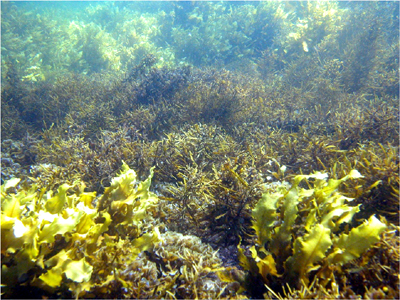

library(tidyverse)
algae <- read_csv("Algal_traits.csv")Como escribir funciones
Una función es un fragmento de código independiente que realiza una tarea específica. Piensa en ellas como secuencias de código puntuales que se escriben por de forma que complementan la secuencia de código principal.
El código bien escrito utiliza muchas funciones, esto incluye:
- funciones básicas de ,
- funciones de otros paquetes que hayas instalado, y
- funciones que personalizadas.
Es difícil hacer algo en sin utilizar algunas de las funciones incorporadas, pero ¿has escrito tus propias funciones? Si no es así, es hora de empezar.
A continuación, dedicaremos algo de tiempo a describir los dos principales tipos de función, por qué usar funciones y luego cómo se construyen.
Ejemplo:
Para ilustrar nuestros ejemplos, utilizaremos un conjunto de datos de muestra que contiene una serie de medidas diferentes de muestras de algas replicadas. Puedes leer los datos directamente en desde la web:
(o si prefieres descargar el conjunto de datos, Algal_traits.csv). Al echar un vistazo, vemos un montón de variables como altura, peso, etc.
# A tibble: 60 × 8
Location Type Species height length dryweight wetwet strength
<chr> <chr> <chr> <dbl> <dbl> <dbl> <dbl> <chr>
1 w1 red.algae a 0.395 2.16 0.956 2.46 2.993355157
2 w1 red.algae a 0.0189 1.98 0.0655 1.96 2.756726384
3 w1 red.algae a 0.698 4.72 0.200 2.24 2.252360245
4 w1 red.algae a 0.139 2.00 0.467 1.53 2.310011661
5 w1 red.algae a 0.377 4.41 0.978 2.10 2.334597887
6 w2 red.algae a 0.0767 0.572 0.100 1.61 <NA>
7 w2 red.algae a 0.933 0.839 0.564 1.75 2.472866529
8 w2 red.algae a 0.0617 4.62 0.252 1.72 2.635546813
9 w2 red.algae a 0.991 4.08 0.254 1.71 2.521458416
10 w2 red.algae a 0.314 2.13 0.125 2.14 2.580392619
# ℹ 50 more rowsTipos de función
En términos generales, existen dos tipos principales de función:
En primer lugar, están las funciones que hacen algo y devuelven un objeto. Estas funciones toman algunos valores de entrada especificados, realizan algunas manipulaciones/operaciones y luego te devuelven un objeto. Ejemplos incluyen mean() (calcula la media de un vector), lm() (ajusta un modelo lineal) o read.csv (carga una tabla de datos).
En segundo lugar, están las funciones que tienen algún efecto externo en tu computadora o entorno de trabajo. Estas funciones hacen algo pero no devuelven ningún objeto. Ejemplos incluyen funciones como write.csv() (escribe un archivo en el disco), plot() (genera un gráfico), library() (carga un paquete).
Para el primer tipo, a menudo guardarás el resultado en una variable y lo manipularás aún más. Por ejemplo, supongamos que queremos calcular el promedio de la variable altura de las muestras en los datos de algae. Podemos usar la función mean:
mean_height <- mean(algae$height)Este código calcula el promedio de algae$altura y lo guarda en la variable mean_height. Podemos consultar la respuesta ejecutando el nombre de la variable:
mean_height[1] 0.4590399También podemos ejecutar la función sin asignar la salida a una variable. La salida aún se devuelve, esta vez en la consola, se imprime y se pierde.
mean(algae$height)[1] 0.4590399En cambio, la salida del segundo tipo de función no necesita ser asignada a una variable. Además, la función no imprime nada en la pantalla. Por ejemplo:
write.csv(Algae, "data.csv")¿Por qué usar funciones?
Entonces, ¿por qué es tan útil dividir tu script en muchas funciones separadas pero que colaboran entre sí? ¿Por qué no escribir un solo script grande y largo? Hay varias formas en las que escribir funciones puede mejorar tu código.
El código con funciones es más fácil de leer
Escribir funciones es una buena forma de organizar tus métodos analíticos en fragmentos autocontenidos. Generalmente, el código escrito de esta manera es mucho más fácil de leer.
Considera algunas de las funciones que ya has utilizado en R. Por ejemplo, mean().
Esta función ya está predefinida dentro del paquete base de R, lo que significa que no tuviste que decirle al ordenador cómo calcular la media, y debido a que ese trabajo de programación ya se ha realizado, simplemente puedes usar la función en tu propio script. Imagina si cada vez que necesitaras calcular una media tuvieras que escribir lo siguiente:
sum(x) / length(x)Incluso esta línea de código utiliza dos funciones: la función sum y la función length. Si estas no estuvieran disponibles, tendrías que escribir el método completo cada vez que necesitaras calcular un promedio.
(x[1] + x[2] + x[3] + x[4] + x[5]) / 5En cambio, simplemente usamos mean sin pensarlo dos veces.
Es importante destacar que es mucho más fácil entender qué hace mean(x) que la línea anterior. Al leer el código, sabes exactamente qué está sucediendo. Usando la fórmula completa, sería menos obvio qué estaba sucediendo cada vez que quisieras calcular el promedio de una variable diferente.
Lo cual plantea un punto importante: las funciones deben tener un nombre claro e informativo que indique qué hace la función.
Las funciones aumentan rápidamente la facilidad con la que puedes leer e interpretar el código.
No es obvio qué hace el código sqrt(var(algae$height)/length(algae$height)), mientras que es inmediatamente obvio qué hace el código standard_error(x).
Organiza tu flujo de trabajo
Basándonos en la idea de hacer que el código sea más fácil de leer, las funciones pueden ayudar a organizar todo tu flujo de trabajo y facilitar su seguimiento. A menudo, las personas tienen un largo script de análisis que es difícil de interpretar. Cuando usas funciones, tu script de análisis puede verse mucho más simple:
data <- read_csv("Algal_traits.csv")
stats_species <- fit_model_species(data)
stats_spatial <- fit_model_spatial(data)
make_plot_species(stats_species)
make_plot_spatial(stats_spatial)
save_output(stats_species)Aquí, todas las funciones como fit_model_species son aquellas que has escrito tú mismo.
¡Qué fácil es interactuar con eso en comparación con un largo script con cientos de líneas!

Reutiliza código (también conocido como “No te repitas”)
No solo usar la función mean es más informativo (es más fácil entender qué hace tu línea de código), sino que también es reutilizable. Una vez que se define una función, se puede usar una y otra vez, no solo dentro del mismo script, sino también en otros scripts.
Para resaltar aún más esto, vamos a través de un ejemplo de cómo escribir nuestra propia función para calcular el error estándar de un grupo de variables. R tiene funciones incorporadas para el promedio de un vector (mean(x)) y la desviación estándar (sd(x)), pero no para el error estándar. Para calcular el error estándar,
\[SE_\bar{x}= \sqrt{\frac{var}{n}}\]
necesitamos la varianza y el tamaño de la muestra, n. Estos son relativamente fáciles de calcular usando otras funciones básicas en R. var calculará la varianza y length proporcionará la longitud del vector y, por lo tanto, el tamaño de la muestra (n).
Digamos que primero queríamos el promedio y el error estándar de la altura. Esto se obtiene mediante
sqrt(var(algae$height) / length(algae$height))[1] 0.04067788Imagine ahora que deseas calcular las mismas estadísticas en una variable diferente (por ejemplo, peso seco). Cuando te enfrentas a la necesidad de usar este código dos veces, es posible que te tientes a copiar y pegarlo en un nuevo lugar, lo que resultaría en dos copias del fragmento anterior en nuestro código. Sin embargo, un enfoque mucho más elegante (y beneficioso a largo plazo) es convertirlo en una función y llamar a esa función dos veces.
Si primero definimos una función para el error estándar:
standard_error <- function(x) {
sqrt(var(x) / length(x))
}simplemente usamos standard_error como lo haríamos con cualquier otra función.
standard_error(algae$height)[1] 0.04067788standard_error(algae$dryweight)[1] 0.02190001Reduce chance of errors
Wrapping code into functions reduces the chance of making inadvertent errors. Such errors may not cause your code to crash, but may cause the results to be wrong. These types of mistakes are the hardest to find and can render our results meaningless.
There are at least two ways functions reduce the chance of errors.
First, copy and paste leads to errors. Without a function, you may copy and past code all over the place. For example, if I wanted to calcualte the standard error of a bunch of variables (without using our new standard_error function)
Reducir la posibilidad de errores
Envolviendo el código en funciones se reduce la posibilidad de cometer errores inadvertidos. Estos errores pueden no hacer que tu código falle, pero pueden causar que los resultados sean incorrectos. Este tipo de errores son los más difíciles de encontrar y pueden hacer que nuestros resultados carezcan de sentido.
Hay al menos dos formas en las que las funciones reducen la posibilidad de errores.
Primero, copiar y pegar conduce a errores. Sin una función, es posible que copies y pegues código por todas partes. Por ejemplo, si quisiera calcular el error estándar de varias variables (sin usar nuestra nueva función standard_error):
sqrt(var(algae$height) / length(algae$height))[1] 0.04067788sqrt(var(algae$dryweight) / length(algae$dryweight))[1] 0.02190001sqrt(var(algae$length) / length(algae$dryweight))[1] 0.1824489¿Notaste el error? ¡Olvidé cambiar la segunda variable en la tercera línea! El código se ejecutará pero dará resultados incorrectos. Esto es menos probable si escribimos:
standard_error(algae$height)[1] 0.04067788standard_error(algae$dryweight)[1] 0.02190001standard_error(algae$length)[1] 0.1824489Segundo, las funciones limitan el alcance de las variables y aplican una limpieza. Al calcular algo, es común crear nuevas variables. Por ejemplo, digamos que calculamos el error estándar de la siguiente manera:
var_x <- var(algae$height)
n <- length(algae$height)
sqrt(var_x / n)[1] 0.04067788Ten en cuenta que ahora tienes dos nuevos objetos en tu entorno: var_x y n:
var_x[1] 0.0992814n[1] 60Puedes deshacerte de ellos ejecutando:
rm(var_x, n)(la función rm() “remueve”, es decir, elimina, objetos del entorno).
Pero, ¿qué pasa si olvidas hacerlo? Existe un verdadero peligro de que más adelante reutilices accidentalmente la variable n o var_x, pensando que son algo que no son. Y si tienen nombres no específicos como n, el riesgo de que esto ocurra es alto.
En cambio, si colocas el código anterior dentro de una función, como se muestra a continuación, este peligro desaparece.
standard_error <- function(x) {
var_x <- var(algae$height)
n <- length(algae$height)
sqrt(var_x / n)
}Cuando ejecutas:
standard_error(algae$height)[1] 0.04067788El resultado se devuelve, pero las variables var_x y n no se ven en ningún lugar. Esto se debe a que se eliminaron automáticamente cuando la función terminó.
Cualquier variable creada dentro de una función se elimina automáticamente al finalizar la función. Por lo tanto, el uso de funciones nos deja con un espacio de trabajo limpio y ordenado. Además, el entorno dentro de la función es mucho más seguro que el entorno global, porque es menos probable que obtengamos variables aleatorias de otro lugar.
Ayuda a tu cerebro a resolver problemas grandes
La mejor manera de resolver problemas grandes y complejos es dividirlos en una serie de problemas más pequeños. Es bien sabido que nuestros cerebros no pueden lidiar con más de aproximadamente 5-10 bits de información a la vez.
Escribir funciones nos permite identificar una serie de problemas más pequeños y resolverlos uno por uno, utilizando todo nuestro poder cognitivo.
Cuando observo la función standard_error definida anteriormente, puedo pensar en las operaciones que se realizan (suma, división, raíz cuadrada) de forma aislada del problema más amplio que estoy resolviendo (estudiar algas).
Como regla general, una buena función hace una cosa bien. Si esa una cosa es complicada, puede estar compuesta por un conjunto de funciones más pequeñas (es decir, pasos), cada una haciendo una cosa bien.
Escribiendo tus propias funciones
Ahora veamos más de cerca la mecánica de escribir una función.
La sintaxis de una función
Una definición de función tiene la siguiente forma:
function_name <- function(arg1, arg2, ...) {
statements # do useful stuff
object # return something
}function_name: El nombre de la función. Puede ser cualquier texto válido sin espacios, pero debes evitar usar nombres que ya estén en uso en R. Verifica si tu nombre ya está siendo utilizado como una palabra clave preguntando por la página de ayuda ?function_name (no es una garantía del 100%, pero es una buena verificación). Además, trata de utilizar nombres que describan lo que hace la función. Un nombre largo como calcular_error_estandar es mucho mejor que algo corto e intuitivo como f.
arg1, arg2, …: Los argumentos de la función. Puedes escribir una función con cualquier número de argumentos, los cuales pueden ser cualquier objeto de R (numérico, cadenas de texto, caracteres, data.frames, matrices, otras funciones).
cuerpo de la función: El código entre las {} es el cuerpo de la función y se ejecuta cada vez que se llama a la función. Este es el código que realiza todas las tareas útiles y se denomina cuerpo de la función.
valor de retorno: La última línea de código es el objeto que se debe devolver. A veces verás a las personas escribir return(objeto), aunque es suficiente con escribir objeto.
Utilizando este formato, una función para calcular el error estándar de los valores en el objeto x sería:
standard_error <- function(x) {
sqrt(var(x) / length(x))
}Para poder usar la función, necesitas ejecutar ese código en tu consola. Una vez definida, podemos llamar a la función como lo haríamos con cualquier otra función.
standard_error(algae$height)[1] 0.04067788Argumentos predeterminados
Echemos un vistazo más de cerca a la función mean. Escribir ?mean en la consola muestra los detalles relevantes de “help”. Observa la estructura:
mean(x, trim = 0, na.rm = FALSE, ...)El primer argumento x es nuestro vector de números. Para usar la función, necesitamos especificar algo para x, por ejemplo:
mean(x = algae$height)o simplemente
mean(algae$height)La primera versión deja explícito que los valores en algas$altura fuera de la función son pasados a la variable x dentro de la función. La segunda versión hace lo mismo, pero de manera menos explícita. Funciona porque R toma los valores de altura y los asigna al primer argumento sin nombre en nuestra llamada de función, que se asigna al primer argumento sin nombre en la definición de la función. Entonces, lo siguiente también funcionará:
mean(na.rm = TRUE, x = algae$height)
mean(na.rm = TRUE, algae$height)But what are those are other arguments in the function definition: trim and na.rm? These are optional arguments, with default values set as specified. The function needs a value to run but unless you specify it, it will use the default.
Try running the mean() function on the strength variable.
Pero, ¿qué son esos otros argumentos en la definición de la función: trim y na.rm?. Estos son argumentos opcionales, con valores predeterminados especificados. La función necesita un valor para ejecutarse, pero a menos que lo especifiques, utilizará el valor predeterminado.
Intenta ejecutar la función mean() en la variable strength.
mean(algae$strength)Warning in mean.default(algae$strength): argument is not numeric or logical:
returning NA[1] NAObserva que obtenemos NA, esto se debe a que por defecto la función no sabe cómo tratar los valores faltantes (NA es un valor faltante) y hay uno en esa columna de datos. Cómo tratar los valores faltantes depende en gran medida de lo que estés tratando de calcular (consulta el módulo de ayuda sobre importación de datos), pero en este caso, nos gustaría eliminar los NA antes de calcular la media. Esto se puede lograr estableciendo el argumento na.rm en TRUE:
mean(algae$strength, na.rm = TRUE)Warning in mean.default(algae$strength, na.rm = TRUE): argument is not numeric
or logical: returning NA[1] NALas funciones mean, var, sd, sum se comportan de manera similar. Sin especificar el argumento, las funciones utilizan su valor predeterminado, que en este caso es na.rm=FALSE. Por lo tanto, estos dan el mismo resultado.
mean(algae$strength)Warning in mean.default(algae$strength): argument is not numeric or logical:
returning NA[1] NAmean(algae$strength, na.rm = FALSE)Warning in mean.default(algae$strength, na.rm = FALSE): argument is not numeric
or logical: returning NA[1] NASin embargo, podemos anular esto si es lo que deseamos:
mean(algae$strength, na.rm = TRUE)Warning in mean.default(algae$strength, na.rm = TRUE): argument is not numeric
or logical: returning NA[1] NANotarás que muchas funciones tienen argumentos con valores predeterminados.
Volviendo a nuestra nueva función standard_error, agreguemos un nuevo argumento na.rm para que se comporte como mean y las otras funciones mencionadas anteriormente:
standard_error <- function(x, na.rm = FALSE) {
sqrt(var(x, na.rm = na.rm) / sum(!is.na(x)))
}Al igual que las otras funciones, hemos establecido el comportamiento predeterminado de na.rm en FALSE.
Ahora, probemos nuestra nueva función en la variable de fuerza con datos faltantes, alternando entre na.rm = TRUE y na.rm = FALSE.
standard_error(algae$strength)Warning in var(x, na.rm = na.rm): NAs introducidos por coerción[1] NAstandard_error(algae$strength, na.rm = FALSE)Warning in var(x, na.rm = na.rm): NAs introducidos por coerción[1] NAstandard_error(algae$strength, na.rm = TRUE)Warning in var(x, na.rm = na.rm): NAs introducidos por coerción[1] 0.03870419Dentro de la función, el valor para na.rm que se recibe se pasa a la función var. La función var ya tiene un argumento na.rm incorporado en ella (ver archivo de ayuda ?var), pero length no lo tiene. Podemos usar la función sum(!is.na(x)) para calcular n. La función is.na probará cada valor del vector x para ver si falta. Si no falta (el ! significa NO), entonces devuelve un TRUE para esa posición, y al contar los valores devueltos como TRUE con sum, estamos contando efectivamente solo los valores que no faltan.
Funciones que extienden funciones
Digamos que tienes un script donde constantemente deseas establecer na.rm=TRUE y te cansaste de escribirlo en todas partes:
standard_error(algae$height, na.rm = TRUE)
standard_error(algae$strength, na.rm = TRUE)
...(Además, nos estamos repitiendo mucho y aumentando el riesgo de errores, ¿qué sucede si olvidamos?)
Un enfoque aquí es definir una nueva función que se base en nuestra función anterior pero con el comportamiento deseado. Por ejemplo,
standard_error_narm <- function(x) {
standard_error(x, na.rm = TRUE)
}Podemos llamar ahora a la nueva función y obtener el mismo resultado que se muestra arriba especificando na.rm=TRUE
standard_error_narm(algae$strength)Warning in var(x, na.rm = na.rm): NAs introducidos por coerción[1] 0.03870419Si bien el ejemplo con standard_error tal vez sea un poco trivial, puedes aplicar este enfoque en muchos casos. Por ejemplo, una función que crea un tipo de gráfico con los valores predeterminados configurados exactamente como te gustan.
¿Para qué sirve el argumento ...?
¿Has notado el argumento ... en la definición de la función mean anterior? ¿De qué se trata eso? El elemento ..., o puntos suspensivos, en la definición de una función permite que se pasen otros argumentos a la función y se los transmita a otra función dentro de la función que se llama, sin tener que escribirlos todos por nombre. Por ejemplo, en la definición de la función standard_error_narm podríamos escribir en su lugar:
standard_error_narm <- function(...) {
standard_error(..., na.rm = TRUE)
}Cuando llamas a standard_error_narm definida de esta manera, cualquier argumento que no sea na.rm se pasará directamente a la siguiente función. Esto evita tener que repetir los argumentos de una función al definir otra.
Un ejemplo menos trivial es el uso de plot. Podría escribir una función que modifique algunos de los valores predeterminados de plot, de modo que no tenga que repetirlos una y otra vez.
my_plot <- function(...) {
plot(..., pch = 16, las = 1, log = "xy")
}Agregar comentarios a tu función
Antes de terminar, hay una última cosa que debes hacer. Es una buena idea agregar comentarios a tu función, ya que esto te ahorrará muchos problemas cuando tengas que corregir algo más adelante. Los comentarios de una función deben contener una breve descripción de la función (una oración), una lista de los argumentos de la función con una descripción de cada uno (incluido el tipo de dato) y una descripción del valor de retorno. Los comentarios de la función deben escribirse inmediatamente arriba o abajo de la línea de definición de la función.
standard_error <- function(x, na.rm) {
# Computes the sample standard error
#
# Args:
# x: Vector whose standard error is to be calculated. x must have length greater than one.
# y: na.rm can either be T or F. T removes missing values before calculating standard error.
#
# Return:
# The standard error of x
sqrt(var(x, na.rm = na.rm) / sum(!is.na(x)))
}Otra forma común de anotar funciones es utilizando la sintaxis de roxygen2.
Almacenar y utilizar funciones
Una vez que adquieras el hábito de escribir funciones, es una buena idea mantenerlas en un archivo separado que contenga todas tus funciones juntas. ¿Por qué? Porque de lo contrario, tendrás estos archivos grandes y pesados que entorpecen tu script. Si ya has resuelto un problema y sabes cómo hacer algo, ¿por qué no guardarlo en algún lugar donde puedas acceder a ello solo si es necesario?
Para mantener tus funciones fuera del camino, te recomendamos mantener todas las funciones de cada proyecto juntas en una carpeta llamada R dentro del directorio de tu proyecto. (Para obtener más información sobre la configuración de proyectos, consulta nuestra publicación sobre gestión de proyectos.)
Para hacer que estas funciones sean accesibles en tu flujo de trabajo, puedes usar la función source para cargar los archivos de funciones en la memoria, por ejemplo:
source("R/stats.R")A menudo, puedes tener una serie de archivos
source("R/data_cleaning.R")
source("R/stats.R")
source("R/plots.R")Es cuestión de preferencia si utilizas un solo archivo o varios archivos.
Escribir funciones para trabajar con el operador de pipes %>% - |>
Para muchos de nosotros, los pipes se han convertido en una parte esencial de nuestro flujo de trabajo. (Si esto te resulta desconocido, consulta nuestra publicación sobre el uso de pipes en manipulación de datos).
Importante, puedes escribir funciones que funcionen con el operador de pipes. Lo único que necesitas hacer es configurar tu función de modo que el primer argumento sea el objeto que se está pasando al pipe. De hecho, nuestra función standard_error ya funciona con pipes, asumiendo que estás pasando x:
algae$height %>% standard_error()[1] 0.04067788Devolviendo múltiples argumentos
Los ejemplos anteriores devuelven un solo elemento. ¿Qué sucede si quiero devolver varios elementos desde una función? La respuesta es devolver un objeto list. Las listas son útiles porque puedes agrupar muchos elementos diferentes.
Por ejemplo, podríamos escribir una función que devuelva varias estadísticas de una variable:
summary_stats <- function(x, na.rm = TRUE) {
list(
mean = mean(x, na.rm = na.rm),
var = var(x, na.rm = na.rm),
n = sum(!is.na(x))
)
}Si ejecutamos esta función, recibimos un objeto que tiene elementos nombrados:
height_stats <- summary_stats(algae$height)
names(height_stats)[1] "mean" "var" "n" height_stats$mean[1] 0.4590399height_stats$var[1] 0.0992814height_stats$n[1] 60De hecho, muchas funciones hacen esto, por ejemplo, lm() (para ajustar un modelo lineal). Al ajustar un modelo, podemos verificar que es una lista, luego pedir los nombres de los elementos devueltos y comenzar a llamarlos por nombre:
fit <- lm(algae$height ~ algae$dryweight)
is.list(fit)[1] TRUEnames(fit) [1] "coefficients" "residuals" "effects" "rank"
[5] "fitted.values" "assign" "qr" "df.residual"
[9] "xlevels" "call" "terms" "model" fit$coefficients (Intercept) algae$dryweight
0.4054402 0.1276447 Qué hace que una buena función
Finalmente, repasemos algunos puntos sobre qué hace que una buena función.
Es corta
Idealmente, cada función hace una sola cosa bien. A menudo, esto significa muchas funciones cortas. Las funciones cortas son extremadamente útiles. Incluso si el código en el cuerpo de la función es más complejo, idealmente aún hace una sola cosa bien.
Hace una sola cosa bien Tiene un nombre intuitivo
Ayuda adicional
Puedes encontrar más ayuda sobre funciones en:
- Tutorial de DataCamp sobre funciones
- Información de Hadley Wickham sobre funciones para usuarios intermedios y avanzados.
- El material introductorio oficial de R sobre cómo escribir tus propias funciones
Autor: Original de Keryn F Bain; revisado por Daniel S Falster
Año: 2018
Última actualización: Nov. 2023